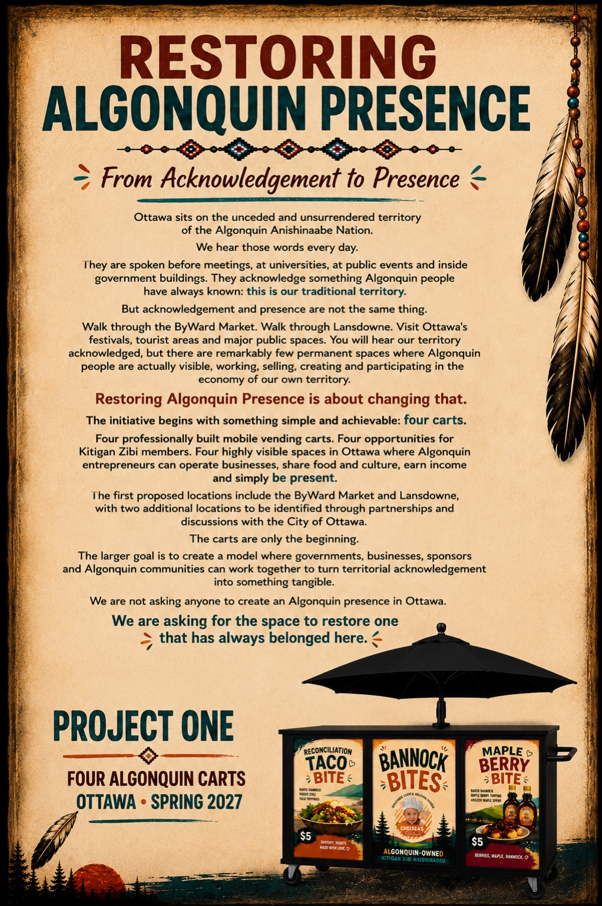
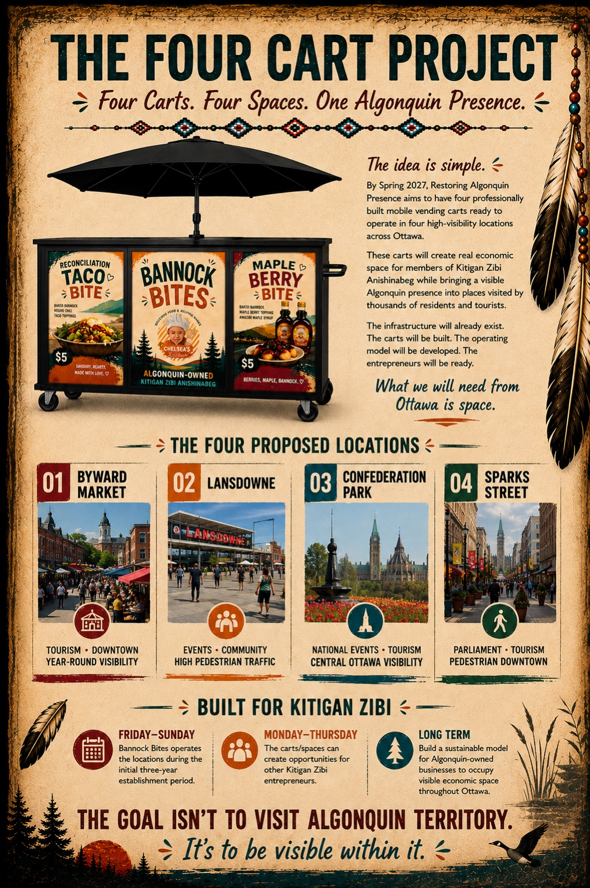
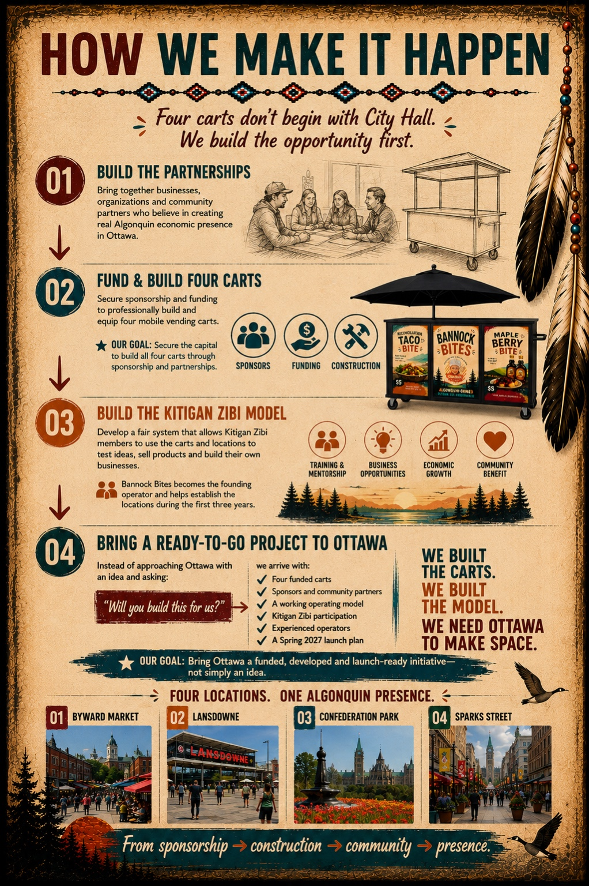

01
Project One • Ottawa • Spring 2027
Restoring Algonquin Presence
From Acknowledgement to PresenceOttawa acknowledges every day that it sits on the unceded and unsurrendered territory of the Algonquin Anishinaabe Nation. We want to turn some of that acknowledgement into something people can actually see.
Four carts. Four spaces. One Algonquin presence.
Ottawa • Spring 2027

Why this project exists
Ottawa acknowledges Algonquin territory every day.
Land acknowledgements are spoken before meetings, at universities, inside government buildings and at major public events. But acknowledgement and presence are not the same thing.
Walk through the ByWard Market. Lansdowne. Sparks Street. Ottawa's festivals and major tourism spaces. There are remarkably few permanent places where Algonquin people are visibly working, selling, creating and participating in the economy of our own traditional territory.
Restoring Algonquin Presence is about changing that.

Project One
Four Algonquin Carts
By Spring 2027, the goal is to have four professionally built mobile vending carts ready to operate in four highly visible locations across Ottawa.
01
Infrastructure
Professionally constructed and equipped mobile vending carts.
02
Opportunity
Space for Kitigan Zibi entrepreneurs to test ideas, sell products and build businesses.
03
Presence
Algonquin-owned businesses operating visibly in places visited by residents, workers and tourists.
The carts are only the beginning.
Where it begins
Four Proposed Locations
The specific sites will be developed through partnerships with the organizations responsible for these spaces. These are the four places we believe can create the strongest combination of visibility, tourism, community and economic opportunity.
02
Lansdowne
Events • Community • Heavy pedestrian traffic03
Confederation Park
National events • Tourism • Central Ottawa04
Sparks Street
Parliament • Tourism • Downtown pedestrian trafficWho this is built for
Built for Kitigan Zibi
The infrastructure comes first. Opportunity follows.Friday–Sunday
Establish the locations
Chelsea's Kitchen / Bannock Bites operates the sites during the initial establishment period, generating revenue, proving the model and building customer traffic.
Monday–Thursday
Open the opportunity
Available cart days can create opportunities for other Kitigan Zibi members to test products, concepts and businesses without first having to build their own vending infrastructure.
Long term
Build something sustainable
Develop a fair system where Algonquin-owned businesses can occupy highly visible economic space across Ottawa and use that visibility to grow.
The goal isn't simply to build carts. It is to lower one of the biggest barriers to entrepreneurship: having somewhere affordable, equipped and visible to begin.
How we make it happen
We build the opportunity first.
Four carts do not begin with City Hall. The project becomes stronger if Ottawa is approached with funded infrastructure, committed partners and a working operating model already in place.
01
Build the Partnerships
Bring together businesses, organizations, Algonquin community members and supporters who believe in creating real Algonquin economic presence in Ottawa.
02
Fund & Build Four Carts
Secure sponsorship, funding and construction partners to professionally build and equip four mobile vending carts.
03
Build the Kitigan Zibi Model
Develop the participation process, scheduling, training and operating rules needed to make the infrastructure useful beyond one business.
04
Bring Ottawa a Launch-Ready Project
Instead of arriving with an idea and asking Ottawa to build it, we aim to arrive with:
- Four funded carts
- Sponsors and community partners
- A working operating model
- Kitigan Zibi participation
- Experienced operators
- A Spring 2027 launch plan

We build the carts.
We build the model.
We need Ottawa to make space.
Why this matters
From acknowledgement to participation.
This isn't about asking anyone to create an Algonquin presence in Ottawa. Algonquin people have always belonged here. It is about creating practical pathways for Algonquin people to be visible participants in the economic life of our traditional territory.
The goal isn't to visit Algonquin territory.
It's to be visible within it.
4professionally built carts
4high-visibility Ottawa locations
KZKitigan Zibi participation at the centre
2027Spring launch target
Partnership
Help us build it.
Restoring Algonquin Presence will be strongest if business, community, Algonquin partners and the organizations responsible for Ottawa's major public spaces help build the project together.
Businesses & Sponsors
Help fund a cart, equipment, construction or operations.
Ottawa Organizations
Help establish space, permits, programming, introductions and visibility.
Kitigan Zibi Members
Help shape the participation model or explore operating through the project.
Community Supporters
Share the project, make introductions and help build momentum.
Where this started
Chelsea's Kitchen helped start the conversation.
I'm Kris Odjick, a Kitigan Zibi Algonquin entrepreneur and the founder of Chelsea's Kitchen / Bannock Bites.
What began as a small food business has increasingly become about something larger: creating visible Algonquin economic presence in Ottawa.
Chelsea's Kitchen will help establish and operate the first carts, but Restoring Algonquin Presence is being designed to create opportunities beyond my own business.
This is Project One.